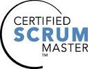

GSM: +358 45 8 521 521
Email: info@arturgajewski.com

I am an outgoing, energetic and highly motivated developer, being interested in career that fits my professional skills, personality and challenges. I always try to improve myself through different methods and I am willing to share my knowledge with others.
I strive to become a better developer by contributing to open source community and various projects. I have created many different components that can be used by anyone in Zend Framework and Symfony and am one of the main contributors to ProTalk.me open source project.
Please refer to my Github repositories for further information on my various projects
@ https://github.com/artur-gajewski
If you wish to have a printer-friendly version of my Curriculum Vitae, press Ctrl+P or select 'Print' from your browser.
Helsinki, Finland
Zend Framework
Hämeenlinna, Finland
Visual Basic, 4,5 op.
Greeley, Colorado, United States
Journalism & Mass Communications, Psychology
Ft Collins, Colorado, United States
Private Pilot's License
Bernie, Missouri, United States
High School Diploma, Exchange Student
Helsinki, Finland
Koneenpiirtäjä / Mechanical Drafting
Scrum Alliance
Member ID: 000195359
Certification in PHP 5.3
Candidate ID: ZEND012625
Certification in Zend Framework
Candidate ID: ZEND012625
Vallillan ammattioppilaitos
Award for class excellence
Mac OS X, Linux (Ubuntu, Fedora), Windows, Zend Server, Apache Server, Zend Studio, Netbeans, Eclipse PDT, Planmill, Trac, Jira, Confluence, Groupwise, SQL Developer, Aqua Datastudio
PHP, XML, XHTML, WML, SOAP, CSS, jQuery, Mootools, Javascript, Perl, J2EE
PHPUnit, Jenkins, Travis, Selenium IDE, Hudson, Firebug, Yslow
Oracle, MySQL, PostgreSQL, Doctrine ORM
Phing, Capistrano
Zend Framework, Zend Framework 2, Symfony 2, Silex, Yii, Drupal 7
Libre Office, Open Office 2/3, Microsoft Office 2002/2007
Native Finnish and Polish, excellent English
This bundle for Symfony 2 provides a way to use console command to generate PHP documentation based on all source code under Src folder.
@ https://github.com/artur-gajewski/DocumentorBundle
This Zend Framework 2 module provides a toolbar for your project's development to easily fetch memory usage information, tail of Apache's access and error logs as well as phpinfo(), all from their own tab in the toolbar.
@ https://github.com/artur-gajewski/DevToolbar
This Zend Framework 2 module provides a way to make any HTML tag's inner content editable in TEXTAREA editor.
@ https://github.com/artur-gajewski/ContentEditable
A Zend Framework 2 module for uploading files to a File Bank along with metadata and status information and controller to offer saved files for download.
@ https://github.com/artur-gajewski/FileBank
A Zend Framework 2 module for fetching weather forecast provided by Google API. Includes a handy view helper to render weather icons and forecast information.
@ https://github.com/artur-gajewski/GoogleWeather
Work time and project management application with Zend Framework 1.
Username and password: demo / demo
@ http://www.arturgajewski.com/worktrack
Extension library I created for Zend Framework 1.
@ http://www.arturgajewski.com/ztools
A visual front-end to Trac, capable of multiple projects in one view.
@ http://arturgajewski.com/tracstat
One of the main contributor to ProTalk.me media portal. Current contributions:
Contribution to Zend Framework Commons' component. Added functionality to ZfcUser module to give user a state from which to either grand or deny access to login. Pending merge of Pull Request.
@ https://github.com/artur-gajewski/ZfcUser
Contribution to Xi project's component. Validation class for both Symfony and Zend Framework that validates the form of Finnish company ID (Y-tunnus).
@ https://github.com/xi-project/xi-validate
Contribution to Xi project's component. File library for PHP 5.3, ongoing process to port library to Zend Framework 2.
@ https://github.com/artur-gajewski/xi-filelib